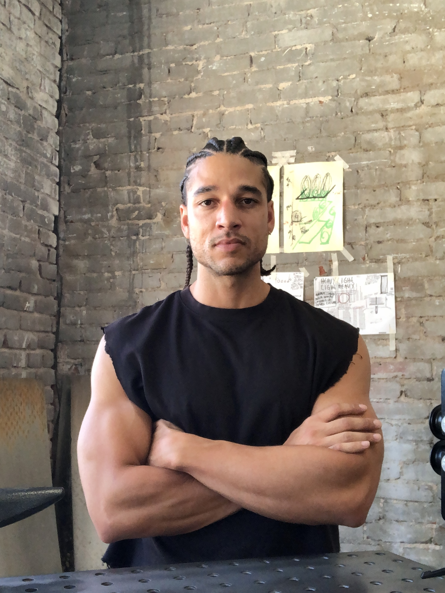

Solomon Rousseau is a Jamaican-American artist currently based in Los Angeles. His practice spans painting, sculpture, installation and photography. By exploring how repetition, reduction, and physical process can yield forms and experiences that are primitive and formal, the artist engages the legacies of Minimalism, Post-Minimalism, and Mono-Ha among others, pursuing investigation of the quiet tension between control and impermanence.
Rousseau's work is a meditation- a laborious rhythm of destruction and creation seeking harmony between the worlds of Dionysus and Apollo, chaos and order, instinct and precision. His process is alchemical and materialist, where chance and ambiguity are married to structure, through the use of utilitarian industrial materials both raw and refined, organic and synthetic. Each work is rigorously built by instinctual gesture and measured construction, so that the materials are not used to depict but to reveal traces of transformation — their textures and densities become records of touch, gravity, and time.
The artist’s hand, though transparent and legible, is light, its gestures echoing natural accidents and overlooked phenomena. This invisible labor, understood as an existential condition, blurs the boundary between making and being. The resulting works dwell in superposition — suspended between presence and absence, matter and thought. They are not representations, but encounters: inviting the viewer to pause, to inhabit the interval between seeing and feeling, and to sense the resonance of matter as it simply exists, where silence, space, and process become the true medium.
This enlightened approach has evolved through an unconventional path of study, independent of institutions, shaped instead by autodidactic research and residencies in Sweden, Indonesia, Mexico, Japan and France. Following his first solo exhibition in 2020 at the Bendix Building in Los Angeles, he became locked out abroad during the pandemic and spent two years living in solitude in the Colombian Andes Mountains- an experience that deepened the introspective nature of his practice. Since returning to Los Angeles, Rousseau has begun to exhibit again, including Giovanni’s Room (Los Angeles, 2024), Redacted Art Fair (Los Angeles, 2025), Silke Lindner (New York, 2025).
As Solomon Rousseau continues to exhibit and develop his various bodies of work, new sculptural series and site-responsive installations are in progress, signaling the next phase of his evolving artistic practice.